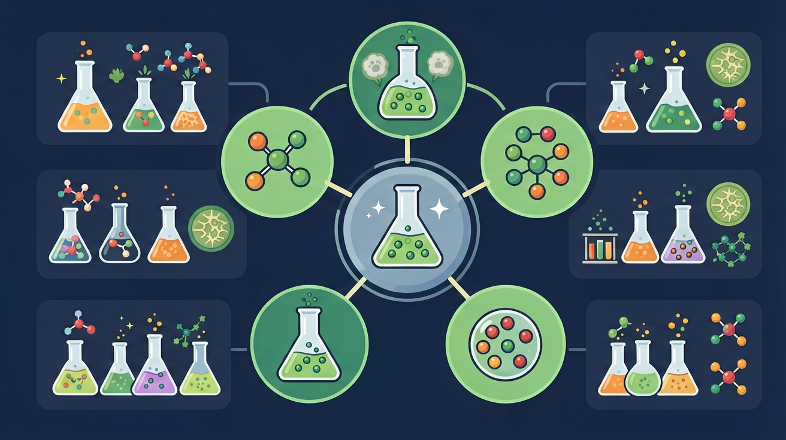

真实情境
早餐中的生物大分子
小明早餐吃了一个鸡蛋和一片面包。鸡蛋富含蛋白质，面包主要成分是淀粉。这些食物中的生物大分子在人体内发挥着重要作用。
已有经验
学生知道蛋白质和淀粉是重要的营养物质
真正卡点
难以区分不同生物大分子的结构与功能
本课任务
分析早餐中生物大分子的结构与功能
为什么糖、蛋白质和核酸都是大分子，却承担完全不同的生命功能？
蛋白质的基本组成单元是？
本课任务：用分子模型辨认糖、氨基酸中的官能团，整理糖类/蛋白质/油脂的组成、检验与水解产物对照表。
写清自变量、因变量和至少两个保持不变的条件，避免同时改变多个因素后无法归因。
至少记录三组带单位的数据或三个可复查的现象，不用“变大了”“更明显”代替证据。
用本课公式、粒子模型或受力关系解释趋势，并指出结论成立所依赖的模型条件。
换一个参数或真实情境预测结果，再用仿真检验；若不一致，回查变量、单位和边界条件。
油脂是高级脂肪酸与甘油形成的酯，水解（皂化）生成甘油和高级脂肪酸盐。生物大分子（糖、蛋白质、核酸、油脂）在生命活动中承担能量与结构功能。从官能团与水解产物理解性质与检验。
油脂在碱性条件下水解的反应称为？
蛋白质由氨基酸通过肽键（缩聚脱水）连接而成，含 —NH₂ 和 —COOH。蛋白质遇强酸、强碱、加热、重金属盐等会变性。可用双缩脲、灼烧气味等检验。水解最终得到氨基酸。
连接氨基酸形成蛋白质的化学键是？
糖类由 C、H、O 组成。单糖（葡萄糖）是基本单位，二糖（蔗糖）、多糖（淀粉、纤维素）由单糖脱水缩合而成。葡萄糖含醛基有还原性（可发生银镜反应）。淀粉遇碘变蓝可用于检验。理解“单体—聚合”关系是关键。
检验淀粉常用？
小明早餐吃了一个鸡蛋和一片面包。鸡蛋富含蛋白质，面包主要成分是淀粉。这些食物中的生物大分子在人体内发挥着重要作用。
学生知道蛋白质和淀粉是重要的营养物质
难以区分不同生物大分子的结构与功能
分析早餐中生物大分子的结构与功能
先选一个你关心的问题。后面的例子、提示和 AI 学伴都会围绕这个问题来帮你推进。
选择或输入后，本课会围绕你的问题展开。

单糖可通过糖苷键形成多糖，承担供能、储能和结构支持等功能。
氨基酸通过肽键形成多肽，空间结构决定催化、运输、结构等功能。
核苷酸通过磷酸二酯键连接，DNA/RNA 负责遗传信息存储与表达。
糖类、蛋白质、核酸是重要生物大分子。糖有单糖、二糖、多糖；蛋白质由氨基酸缩合，含肽键，可水解；核酸携带遗传信息。化学上常用特征反应鉴别：如淀粉遇碘变蓝、肽键与缩二脲反应等。
多糖→单糖（水解）；蛋白质→氨基酸；关注肽键、糖苷键。实验鉴别抓住颜色反应与水解产物还原性。
常见误区：常见误区是把所有糖都当成还原性糖，或认为蛋白质加热变性是水解成氨基酸。
蛋白质分子中连接氨基酸的化学键主要是？
记忆锚点：生物大分子三看：单体是谁，怎么连接，负责什么生命功能。
易错提醒：常见错误：认为所有多糖都能被人体直接消化。纤维素和淀粉连接方式不同，人体利用差异大。
理解糖类、蛋白质、核酸的结构特点与功能联系，掌握用显色反应鉴别生物大分子的实验方法
斐林试剂与还原糖水浴加热产生砖红色沉淀（如葡萄糖与斐林试剂反应生成Cu2O沉淀）
先加样本液于试管，再滴加斐林试剂甲液乙液等量混合液，50-65℃水浴加热2分钟观察颜色变化
混淆双缩脲试剂与斐林试剂使用顺序（蛋白质检测应先加NaOH后加CuSO4）
课堂任务：请用“现象/文本/地图/实验数据 → 关键证据 → 学科解释 → 迁移应用”四步，重写一个关于「生物大分子：糖、蛋白质、核酸的结构与功能」的新问题。
不要只看结论。动手改变变量后，再用一句话解释画面为什么变了。
识别并写出本节核心定义、公式或分类标准。
把本课标准用于一个实验数据或真实生活场景。
设计一个反例，说明常见错误为什么站不住脚。
如果你能解释“为什么糖、蛋白质和核酸都是大分子，却承担完全不同的生命功能？”，这节课就真正过关了。